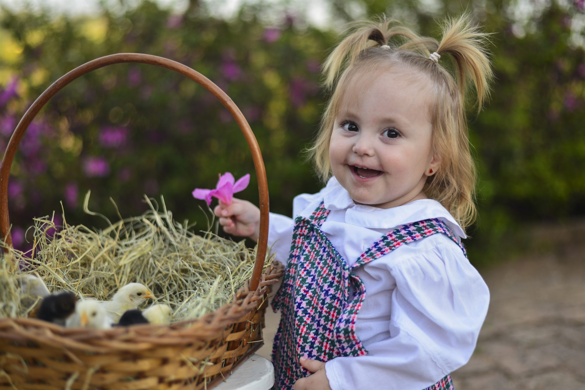
Click Rural Fotografia
Histórias que merecem ser lembradas.
Ensaios espontâneos de infância, família e bichos da fazenda — no ritmo de cada criança.
01 A Click Rural
Fotografia que não pede pose.
Só presença.
A Click Rural nasceu para registrar aquilo que passa rápido demais: um sorriso, um abraço, uma descoberta, um olhar — ou simplesmente a alegria de ser criança.
São fotografias naturais e espontâneas, feitas no tempo de cada criança, preservando a essência de cada pessoa e de cada momento.
Ver os tipos de ensaio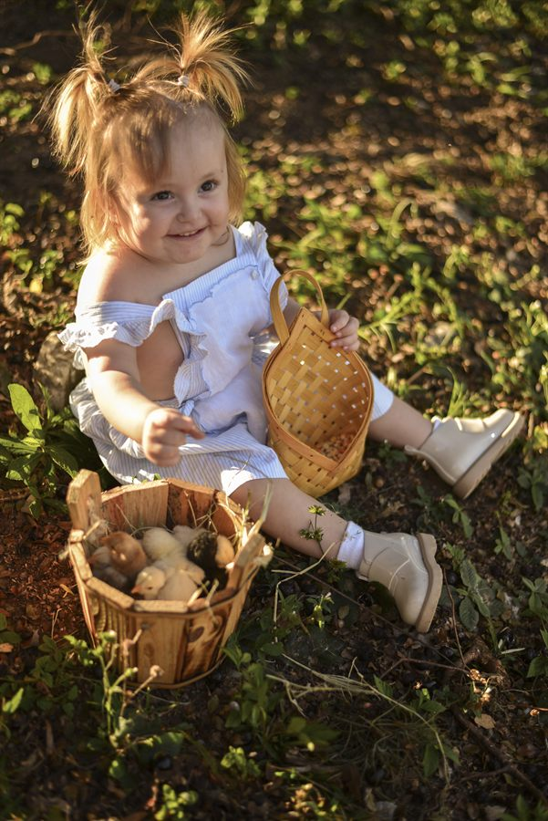
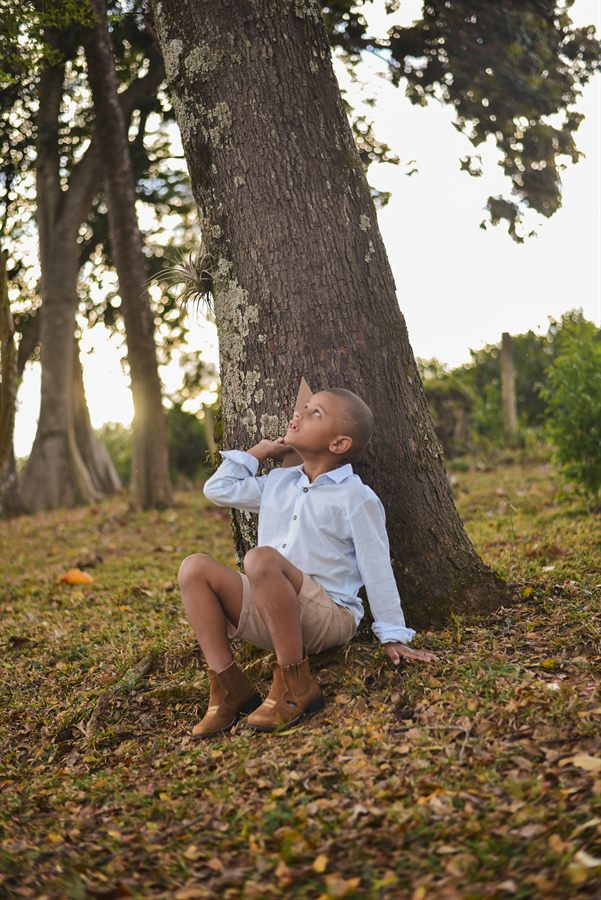
grandes memórias.
02 Ensaios
O que eu registro
-
01
Infância
O mundo na altura dos olhos deles.
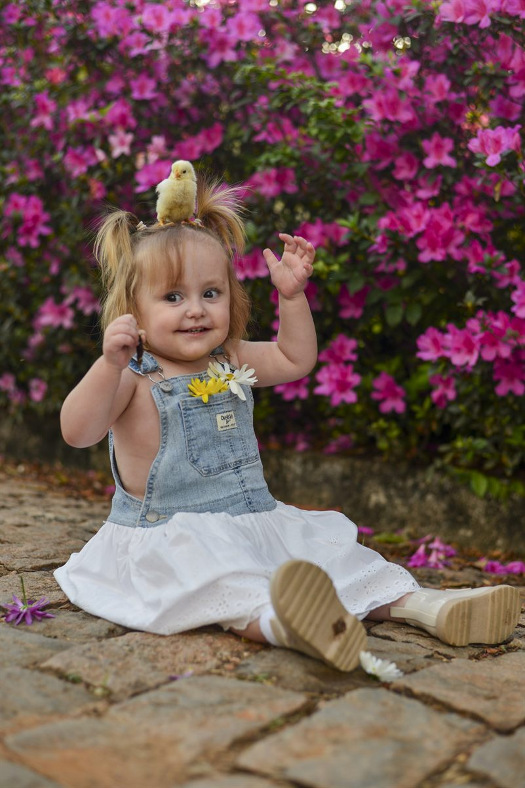
-
02
Família
O afeto que só existe entre vocês.
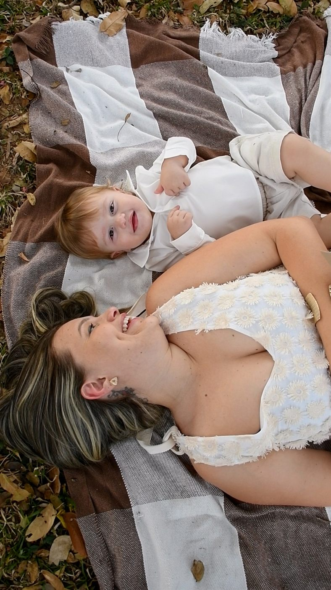
-
03
Bichos da fazenda
Pintinhos, bezerros e amizades improváveis.
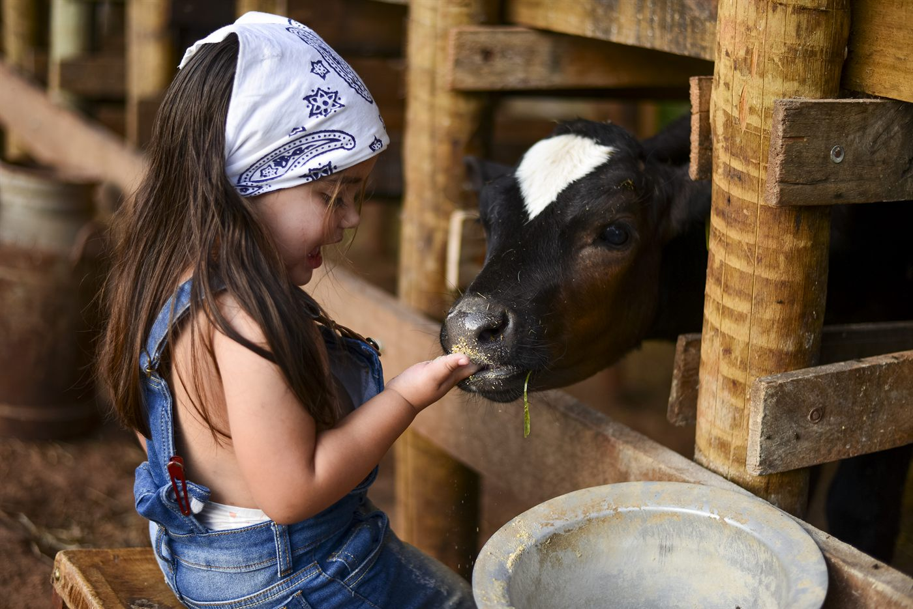
-
04
Vida no campo
Terra, feno, laço e fim de tarde.
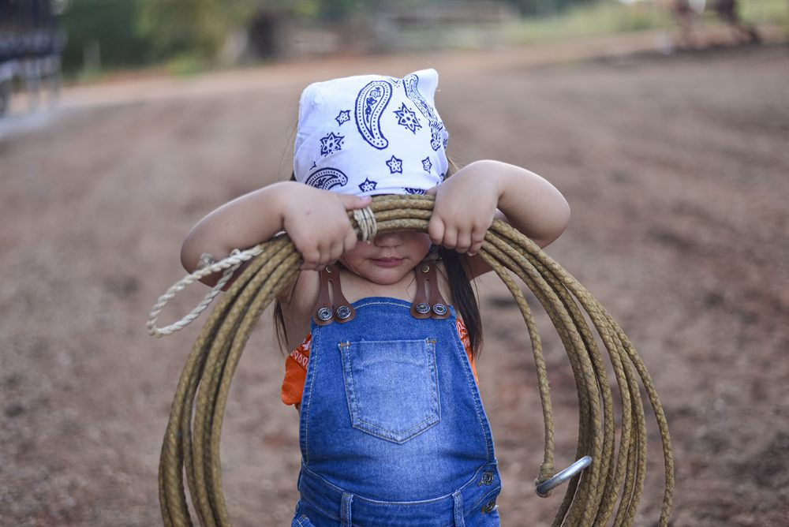
03 Momentos
Pequenos momentos.
Grandes memórias.
Cada ensaio acontece no tempo da criança — sem pose marcada, sem “olha pro moço”. Eu acompanho, espero e registro.
O cenário é a fazenda de verdade: o curral, o feno, a melancia no fim de tarde, o pintinho que resolve subir na cabeça.
Memórias não precisam ser perfeitas.
Precisam ser verdadeiras.
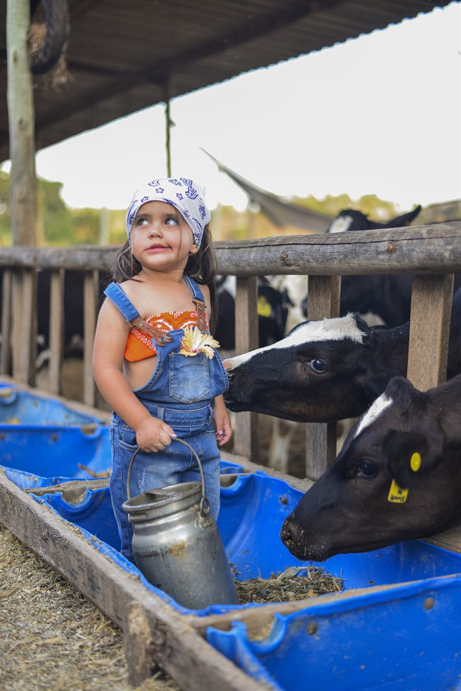
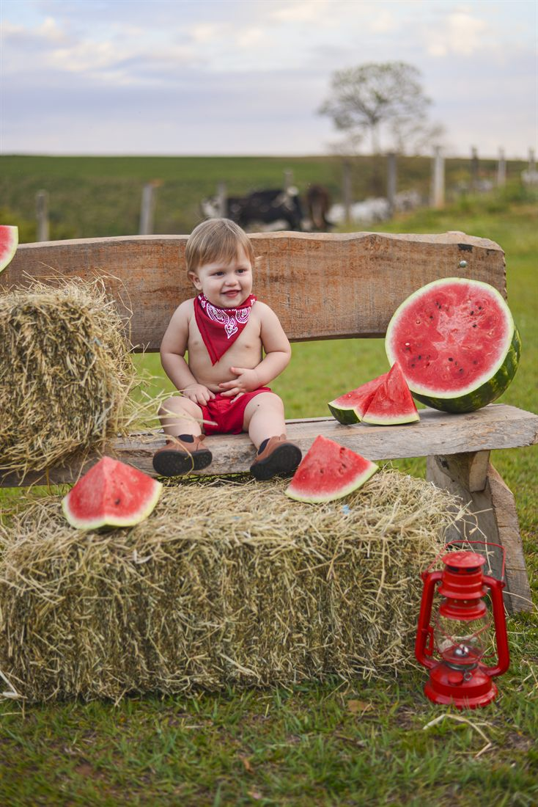
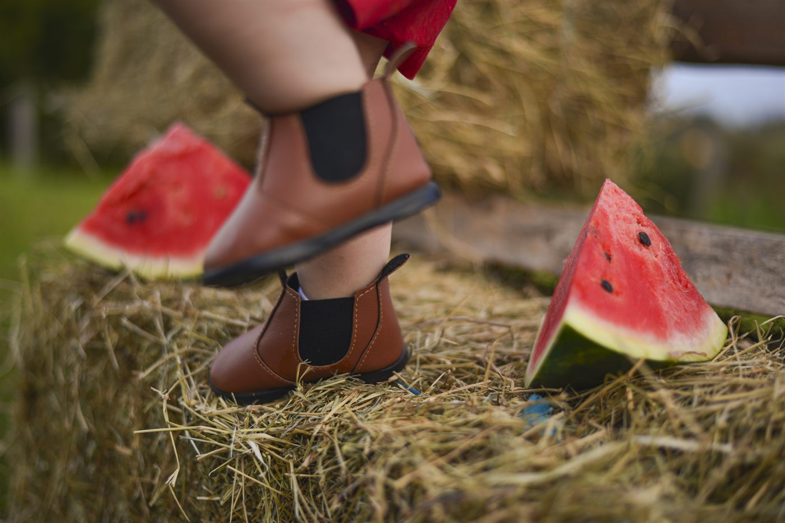
04 Galeria
Um pouco do meu olhar
Clique em qualquer foto para ampliar. Use as setas do teclado para navegar.
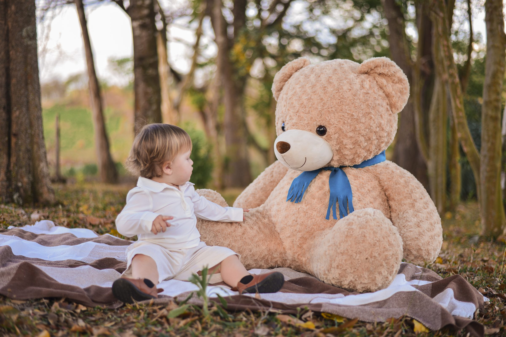
Cada clique guarda um pedacinho
daquilo que não volta.
Click Rural Fotografia
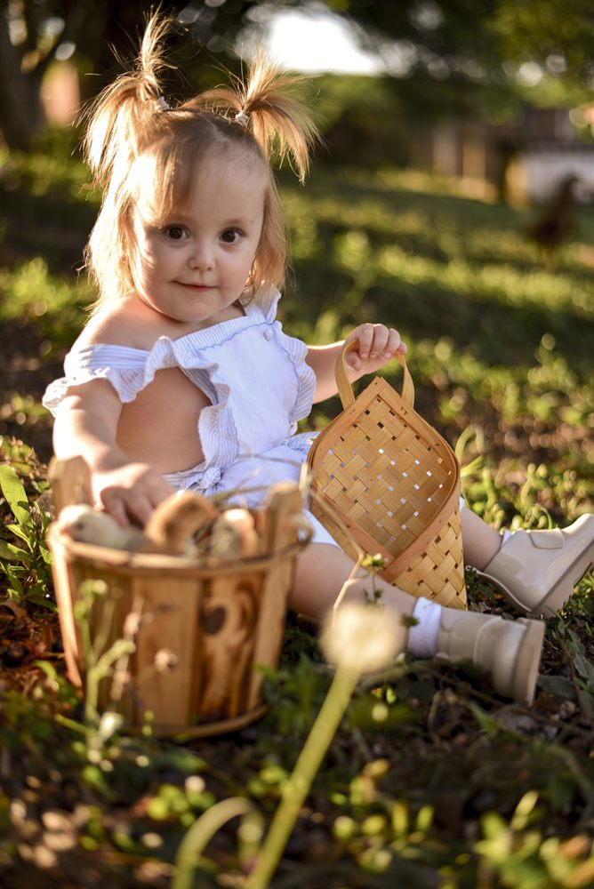
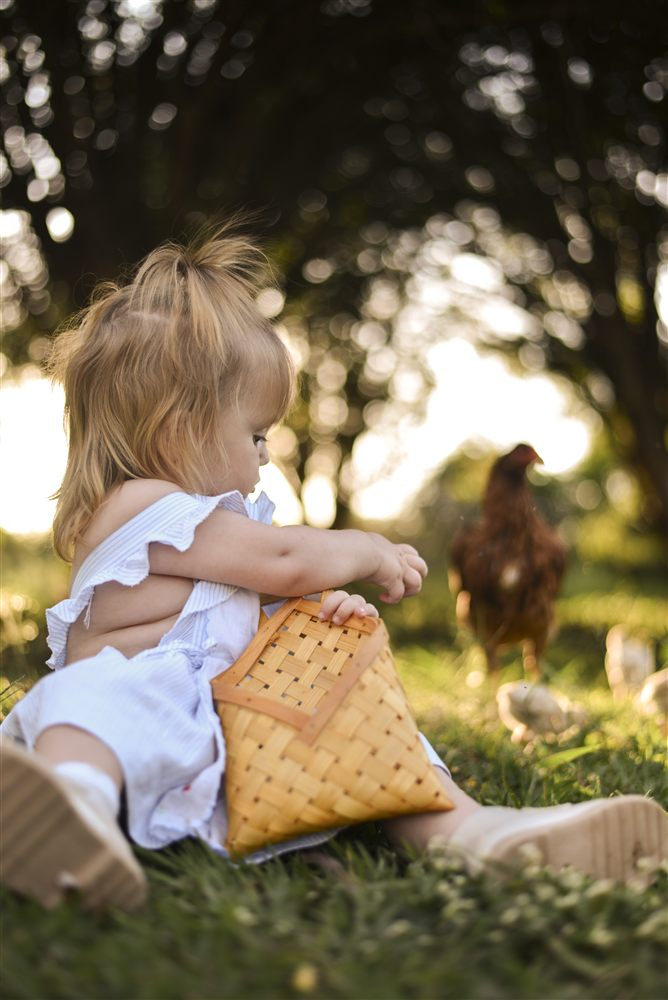
05 Sobre
Por trás da câmera
Oi, eu sou a Click.
Gosto de fotografar pessoas do jeito que elas realmente são — não do jeito que uma pose ensaiada manda ser.
No trabalho, procuro expressões, personalidade, afeto e aqueles pequenos detalhes que passam despercebidos no dia a dia. Um olhar, um gesto, o abraço de um bicho de estimação: são esses instantes inesperados que eu mais gosto de guardar.
Alguns momentos passam em segundos. A fotografia faz com que eles possam voltar sempre que você quiser.
Vamos conversar06 Como funciona
Do primeiro oi
às fotos na sua mão
-
01
Conversa
A gente conversa sobre o que você quer registrar e como imagina esse dia.
-
02
Planejamento
Definimos local, horário, roupas e todos os detalhes do cenário.
-
03
O ensaio
O dia acontece leve, no ritmo da criança — sem pressa e sem pose marcada.
-
04
Memórias
Você recebe as fotografias selecionadas e tratadas com todo o cuidado.
07 Instagram
Momentos compartilhados
08 Contato
Vamos guardar
esse momento?
Conte um pouco sobre a data, o local e o que você gostaria de registrar — respondo o quanto antes.